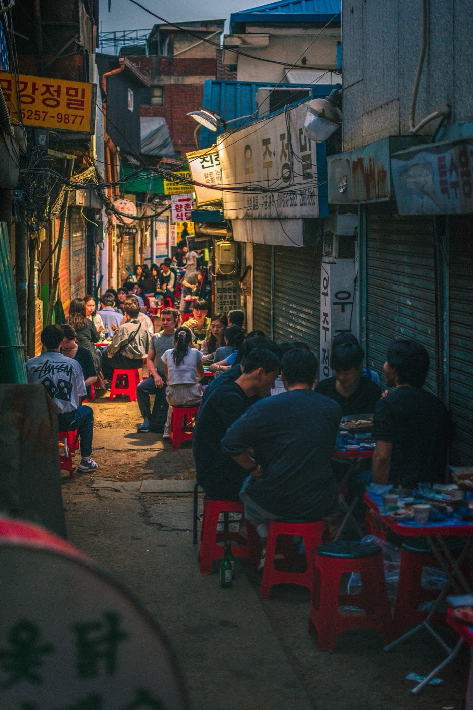
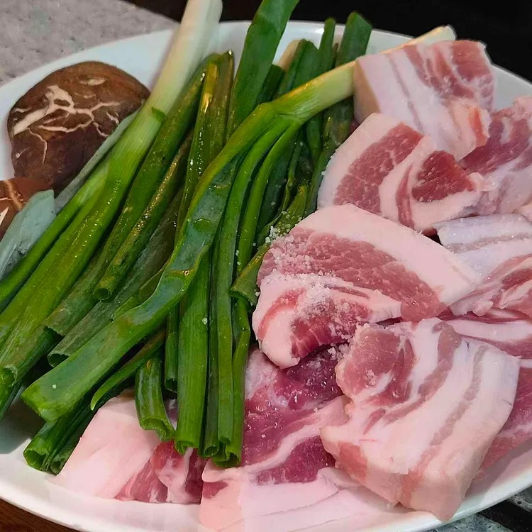
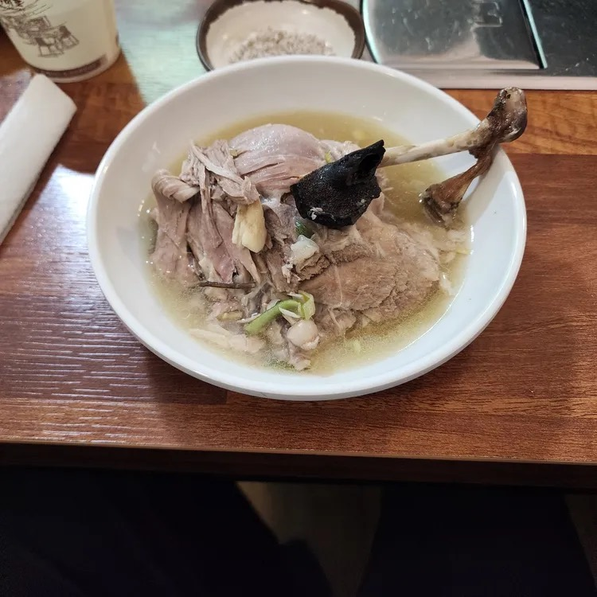
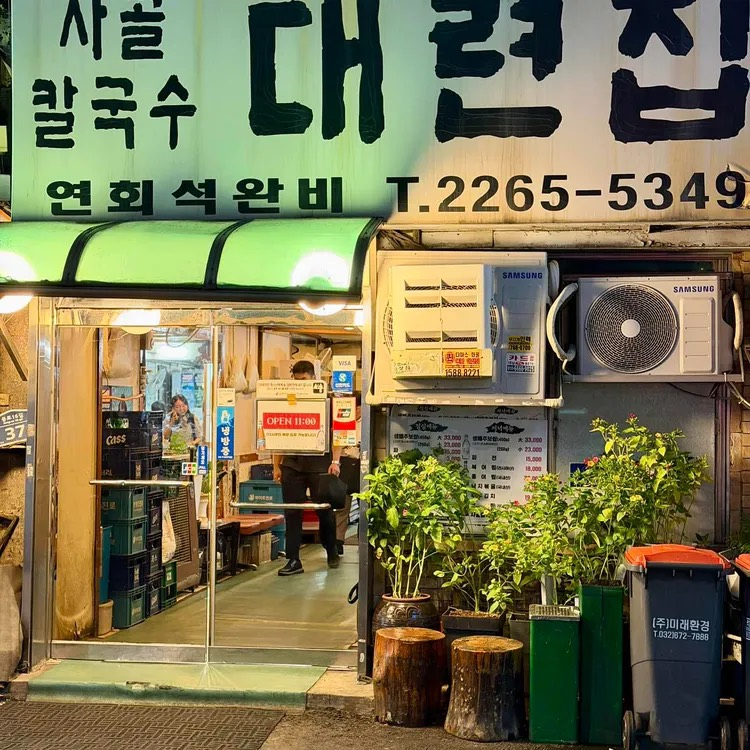
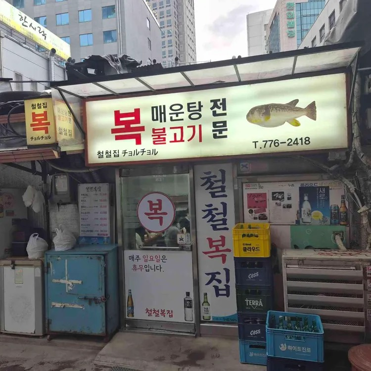
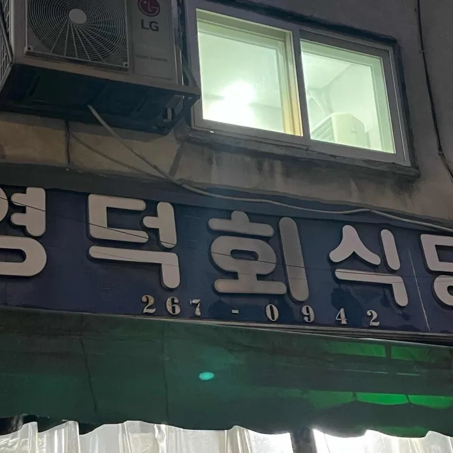
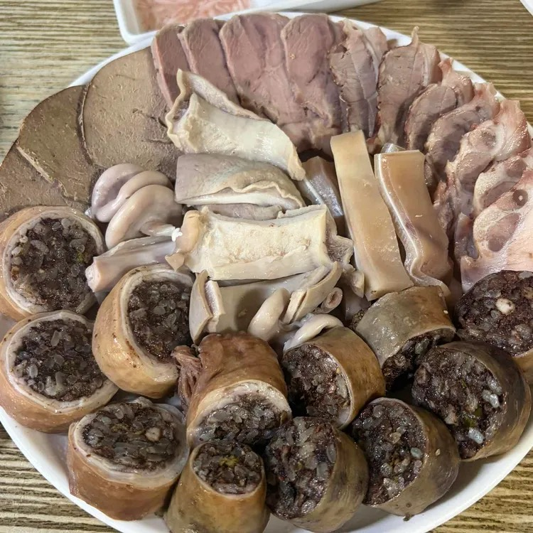
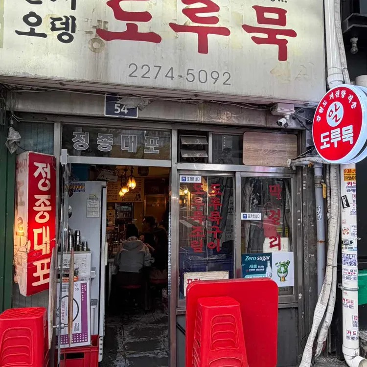
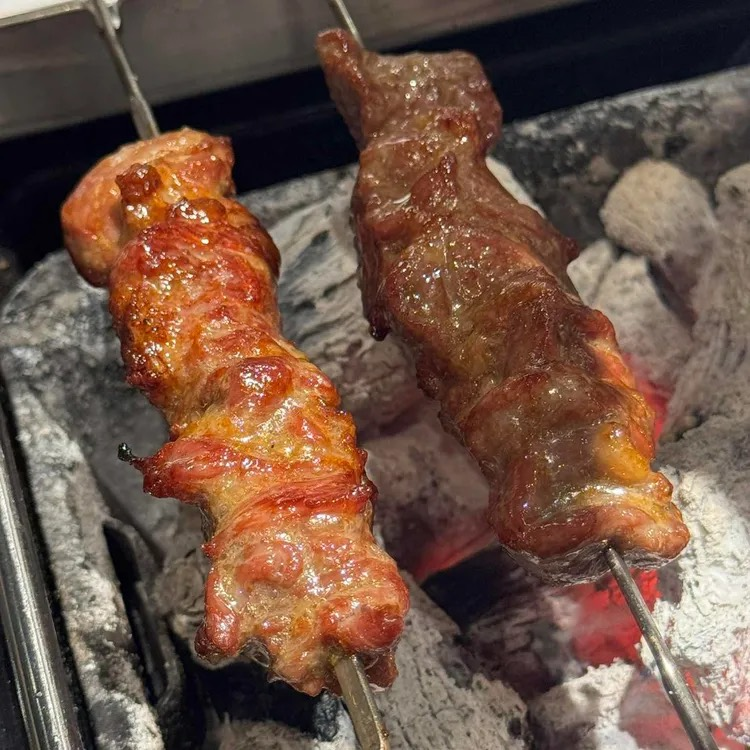
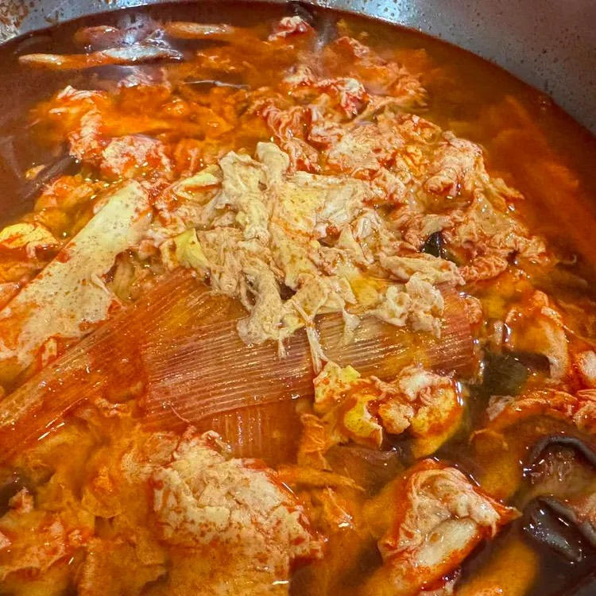

2026. 11. 11 Wed
열 곳 중에서 골라 주세요.
11.11 수요일 저녁
마음에 드는 곳의 번호를 단체 대화방에 남겨 주세요. 두 곳까지 골라도 됩니다. 가장 많이 선택된 곳으로 예약합니다.

1
2
3
4
5
6
7
9
10가격과 평점은 다이닝코드 기준으로 달라질 수 있습니다. 각 항목을 누르면 네이버 지도가 열립니다.
예약 전